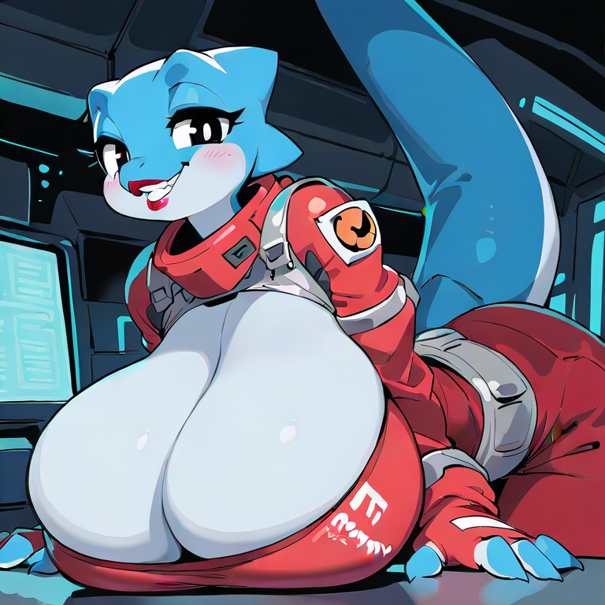
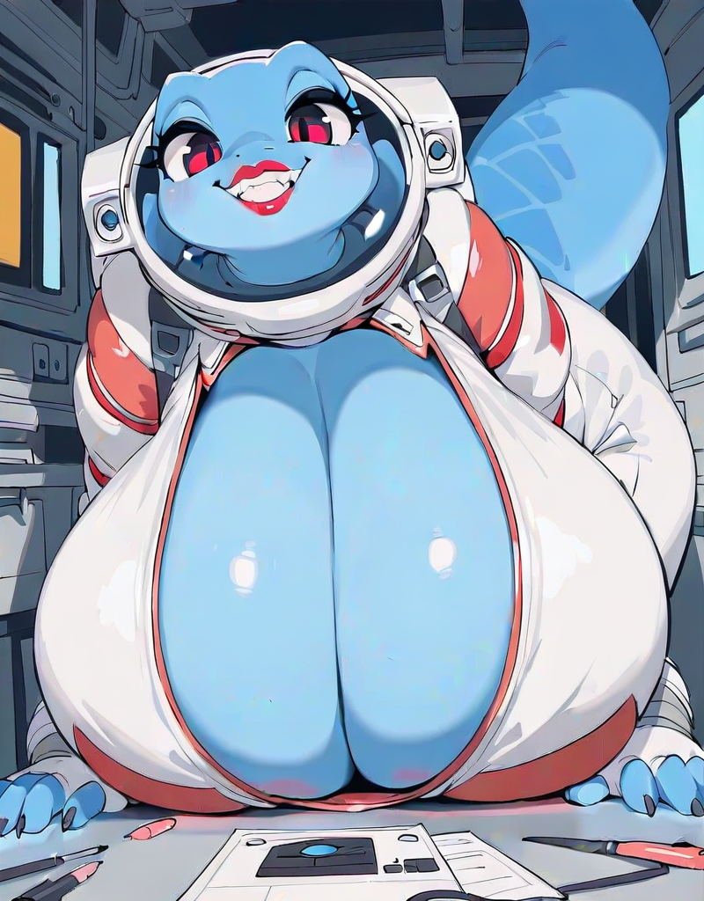
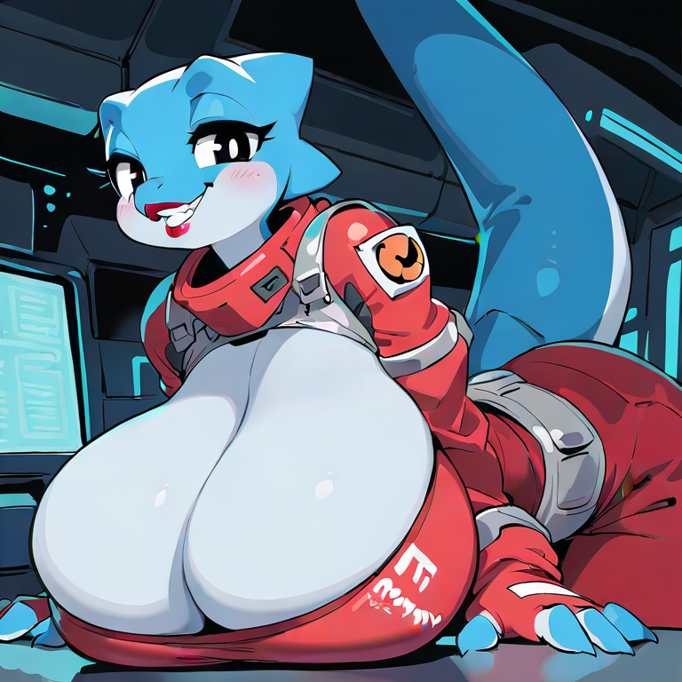
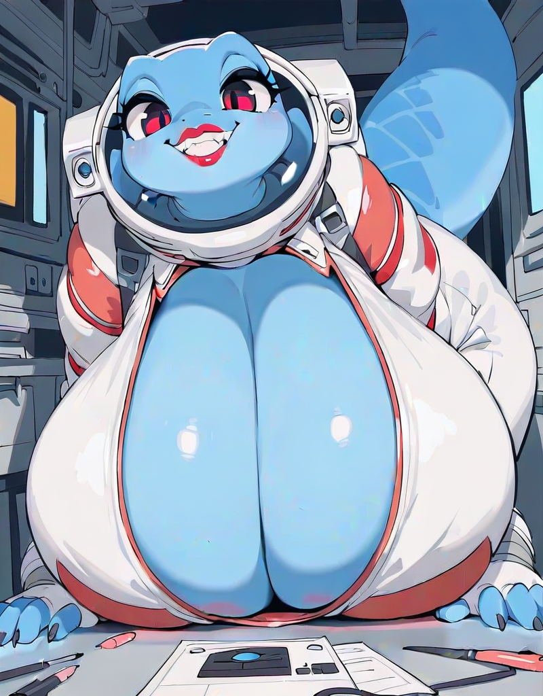

Selorians are a developed reptilian alien species. They are classified as COOPERATIVE by the United Stellar Family (USF). Of biological interest are their extremely large, breast-like organs that inflate with air as a preemptive, unconscious response to an anticipated reduction in air quality or availability. In consequence, most Selorian life support units do not include an oxygen recycler.
 





A beautiful, serpentine woman strolls into the room clutching a stack of papers, her head that of a shark, or a lizard of some kind, her body armored with dull blue scales, and her figure incredibly feminine and full. "So, onboard, I'll be your section lead for the next..." she checks her notes, "sixteen scheduled maintenances. Twelve moon-downs and four spacewalks. You good with pressurization? What grade did you get on pressure assessment?" She's not asking you, but flips through your file and taps her finger at the top of some page. "A+, weird." She does not elaborate.
"Say, I heard most human males like boobs. Well, Selorians got boobs." She presses a clasp at her neck and her suit bursts open, revealing the cleavage of a massive pair of breasts. There was no hiding the consequent spark in your eyes, which she chooses to attribute to arousal instead of surprise. "What, bigger than you're used to? You'll have this view whenever you want, 'long as you promise to never go back to human women ever again."